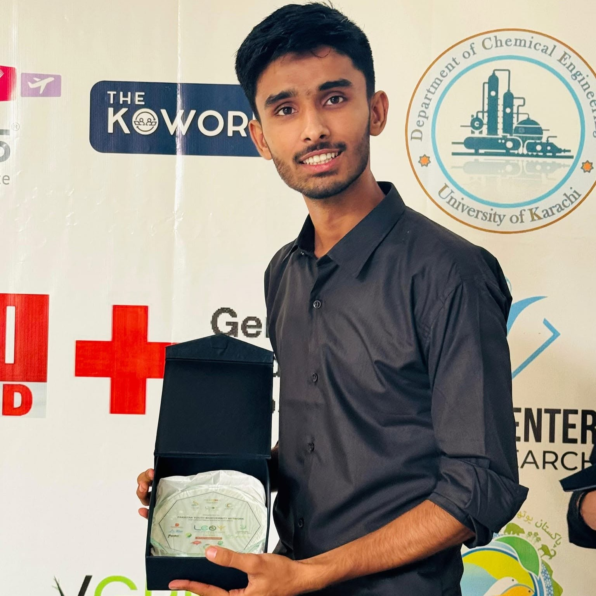
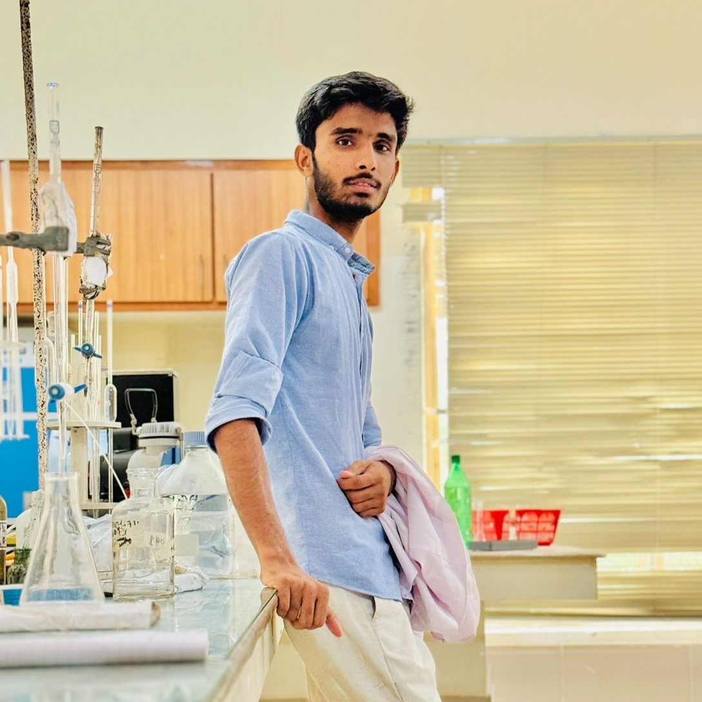
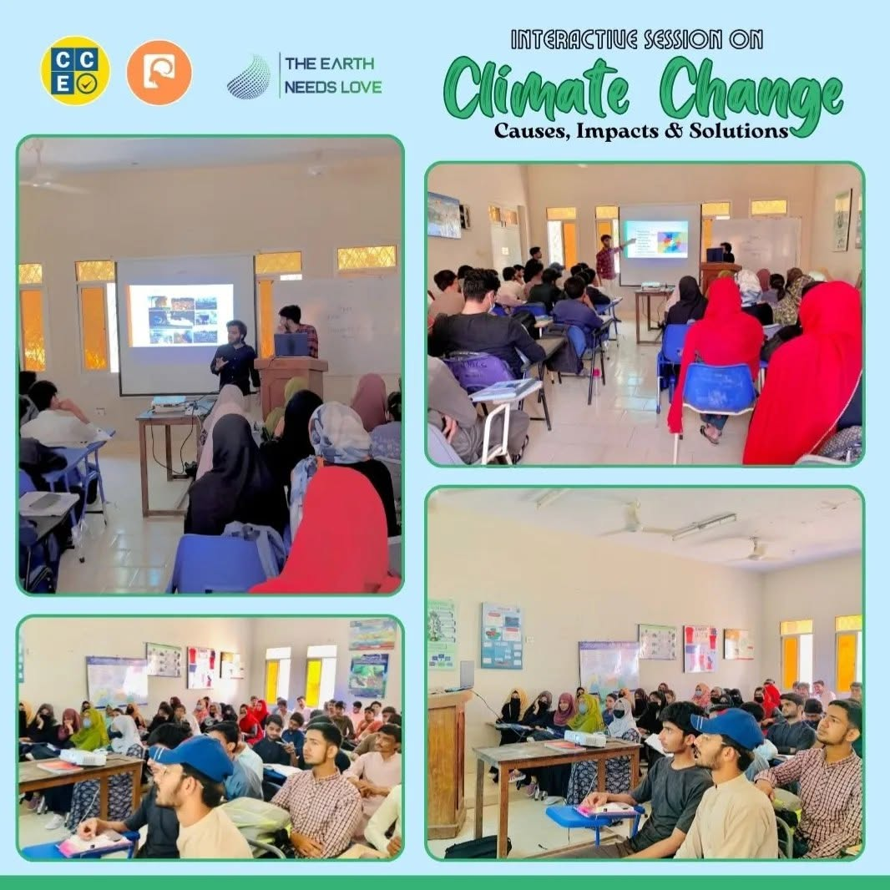

Climate & drought research
Historical and future drought analysis using SPI and NEX-GDDP-CMIP model data in arid and semi-arid regions.
 Portfolio/
Sarmad Mahar
Portfolio/
Sarmad Mahar
ENVIRONMENTAL RESEARCHER · GIS EXPERT · CLIMATE EDUCATOR · SOLO DEVELOPER
I work across climate, spatial data, and community knowledge, and I love exploring, coding, and discovering.
01 / About
I’m an environmental science professional and M.Phil researcher building a practice at the intersection of climate evidence, spatial analysis, and public understanding.
I’m interested in the moments where a dataset becomes a map, a map becomes a conversation, and a conversation becomes a better decision.
02 / Areas of focus
Research, maps, visual storytelling, and code.
Historical and future drought analysis using SPI and NEX-GDDP-CMIP model data in arid and semi-arid regions.
Change detection, conservation mapping, spatial analysis, and web GIS using ArcGIS Pro, ENVI, Google Earth Engine, and Leaflet.
Exploring how environmental shifts influence communities, public health (e.g. tuberculosis incident patterns), ecosystem services, and policy.
Cartography, photography, graphic design, video editing, and clear writing that help good environmental work travel further.
View Creative Portfolio (Cartography · Photography · Design · Videography · Tools) →Workshops, webinars, and youth-led environmental advocacy with Green Impact Movement (GiM), Global Youth Biodiversity Network (GYBN) Pakistan, and The Earth Needs Love (TENL).
03 / Work
04 / Experience & education
University of Sindh, Jamshoro · CGPA: 3.85/4
Centre for Environmental Sciences, University of Sindh (Supervisor: Dr. Habibullah Abbasi)
Drought analysis under SPI & NEX-GDDP-CMIP · Soil degradation remote sensing · Climate shifts & TB epidemiology.
Miani Forest Department, Hyderabad, Pakistan
Socioeconomic survey to assess & optimize forest carbon sequestration & ecosystem services.
University of Sindh, Jamshoro · CGPA: 3.44/4
Pakistan Council of Scientific and Industrial Research (PCSIR), Karachi
IOSH Managing Safely · HSE Engineering (Khalifa Univ) · Science & Engineering of Climate Change (EDHEC) · Carbon Capture & Storage (Univ of Edinburgh) · Water in Mountains (Univ of Geneva) · EIA & Biodiversity Conservation (Sigma Earth) · Field Research (World Bank) · ISO 14001 & GHG Protocol / Net-Zero (Position Green) · UN University GEE Drought Assessment · NASA ARSET Spatial Data for Biodiversity · Esri ArcGIS Pro Basics · Python (Google).
My experience spans spatial data modeling, climate fellowships, biodiversity advocacy with GiM/GYBN/TENL, and comprehensive sustainability training.
Download my CV ↓ Direct download · Updated 2-page CV (PDF)


05 / Contact
For research collaborations, environmental storytelling, GIS projects, or just have a conversation.